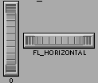

Class Hierarchy
Fl_Valuator
|
+----Fl_Roller
Include Files
#include <FL/Fl_Roller.H>
Description
The Fl_Roller widget is a "dolly" control commonly used to
move 3D objects.

Methods
Creates a new Fl_Roller widget using the given position,
size, and label string. The default boxtype is FL_NO_BOX.
Destroys the valuator.